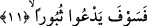

Fenari (rh.)’in “Fatiha Sûresi Tefsiri”nde yer alan ifâdesi şöyledir: Kitabı sol
tarafından verilecek olan kişi münafık olandır. Çünkü kâfirin kitabı yoktur. Zira onun
kâfir olması, hesaba çekilmesi için zaten yeterlidir. Dolayısıyla onun için herhangi bir
kitaba ihtiyaç yoktur. Çünkü kâfirler dinin detay ahkamı ile mükellef değillerdir. Kitabı
arkasından verilecek olanlara gelince bunlar Allah’ın ifâdesiyle “onu kulak ardı
edenler, az bir dünyalığa değişenler” (Al-i İmran 3/187) dir. Kıyamet günü gelince bu
âyette ifâde edilen kişiye; ‘kitabını arka tarafından al’ denilir. Yani; kitabını dünyada
iken kulak ardı ettiğin ve arkana attığın yerden al, denilir. Bu durumda kitap o kimsenin
amel defteri değil, kendisine Allah tarafından amel etmesi için indirilmiş olan ilahi
kitap olmuş olur. Çünkü bu kimseler kitabı arkalarına attıklarında ondördüncü âyetin
deyimiyle; “Rablerine hiç dönmeyeceklerini sanmışlardır.”
Ebu’l-Leys “el-Bostan” isimli eserinde der ki: Âlimler kâfirlerin hafaza melekleri
olup olmadığı noktasında görüş ayrılığına düşmüşlerdir. Bazıları kâfirlerin hafaza
meleği olmadığını, çünkü onların durumlarının zaten gâyet açık olduğunu, amellerinin
bir kâfirden diğerine değişmediğini, sonuçta bütün kâfirlerin amellerinin bir olduğunu
söylemişlerdir. Kendilerine delil olarak; “Suçlular, simalarından tanınır” (Rahman
55/41) âyetini getirmişlerdir. Biz ise bu görüşü kabul etmiyoruz. Bizim görüşümüze
göre kâfirlerin hafaza meleği vardır. Âyet-i kerime kâfirler hakkında hafaza
meleklerinin zikri ile inmiştir. Nitekim Allah bu konuda şöyle buyurur: “Şunu iyi bilin
ki üzerinizde bekçiler, değerli yazıcılar vardır. Onlar yapmakta olduklarınızı bilir.”
(İnfitar 82/10-12)
Bir başka âyet-i kerimede “kitabı sol tarafından verilene gelince” (Hakka, 69/25)
denilirken tefsirini yaptığımız bu âyet-i kerimede; “kitabı arkasından verilen” (İnşikak
84/10) denmektedir. Böylece Allah kâfirlerin kitaplarının ve amellerini görüp yazan
hafaza meleğinin olduğunu haber vermiştir.
Burada şöyle bir soru gündeme gelebilir: “Kâfirin üzerinde amellerini gözetleyen
hafaza meleği var ise o zaman sağ tarafındaki melek onun hiçbir güzel ameli
olmayacağına göre neyi yazacaktır?” Bu soruya şöyle cevap verilebilir: Kâfirin sol
tarafındaki melek, sağ tarafındakinin izni ile onun amellerini yazar, sağdaki de yazmasa
bile buna şâhid olur.
11. Derhal yok olmayı isteyecek;
Yani kâfir dayanılmaz büyük bir azabın başlamasından bir müddet sonra “Yetiş ey
ölüm!” diye bağaracaktır. Bir başka ifâdeyle helâk olmasını, yok olmasını temennî
edecek ve “Yetiş ey helâk, nerdesin? Ey ölüm gelsene! İşte bu tam senin gelme
zamanındır” diye bağıracaktır. Ancak ölüm ona nasıl gelsin ki! Yani kâfire kitap